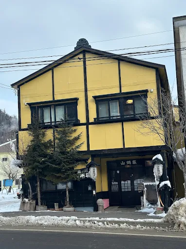
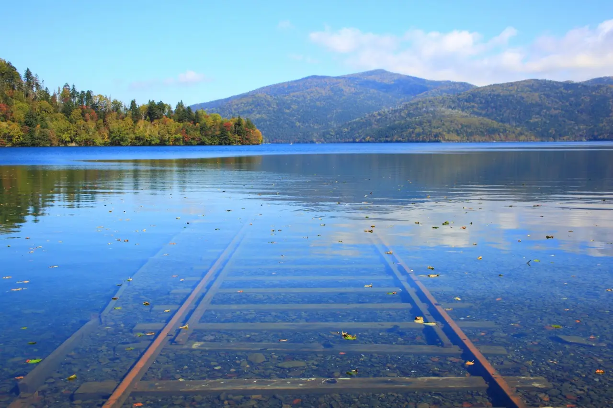
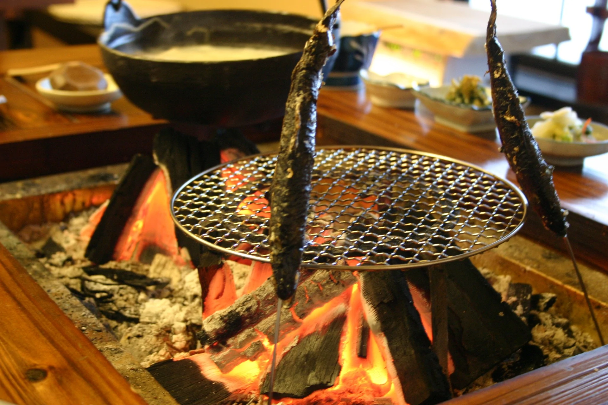
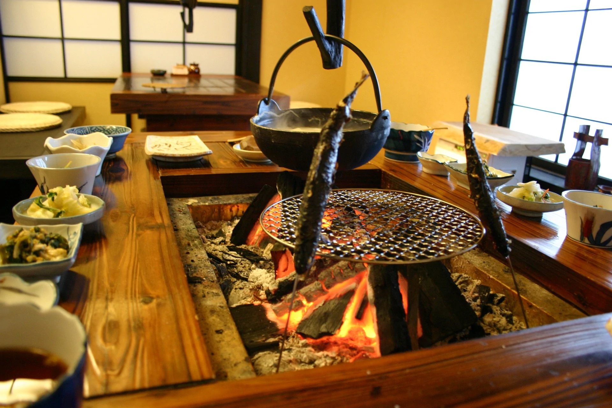
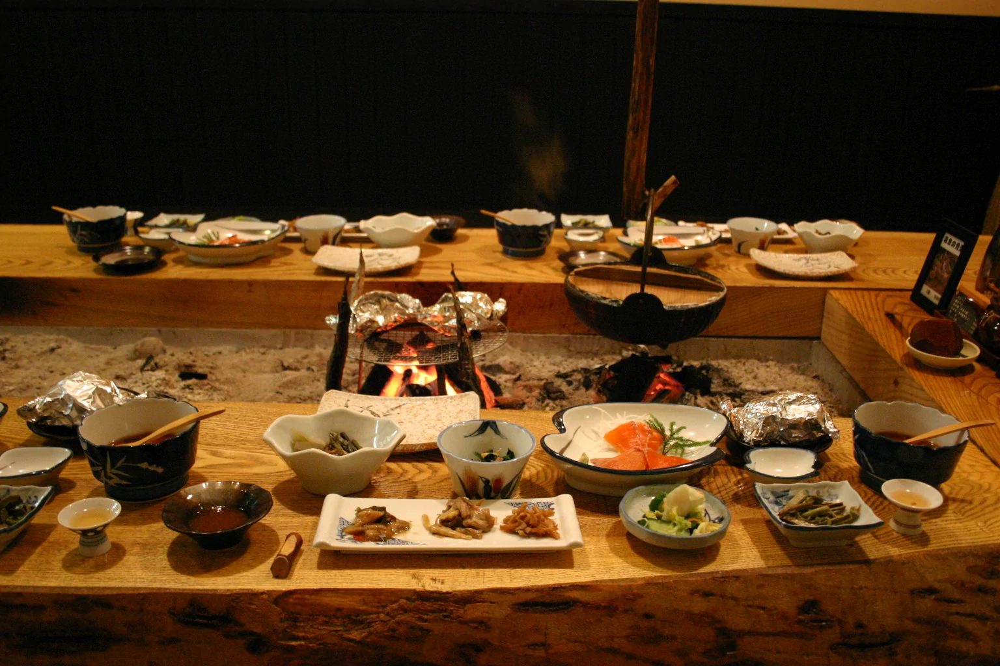
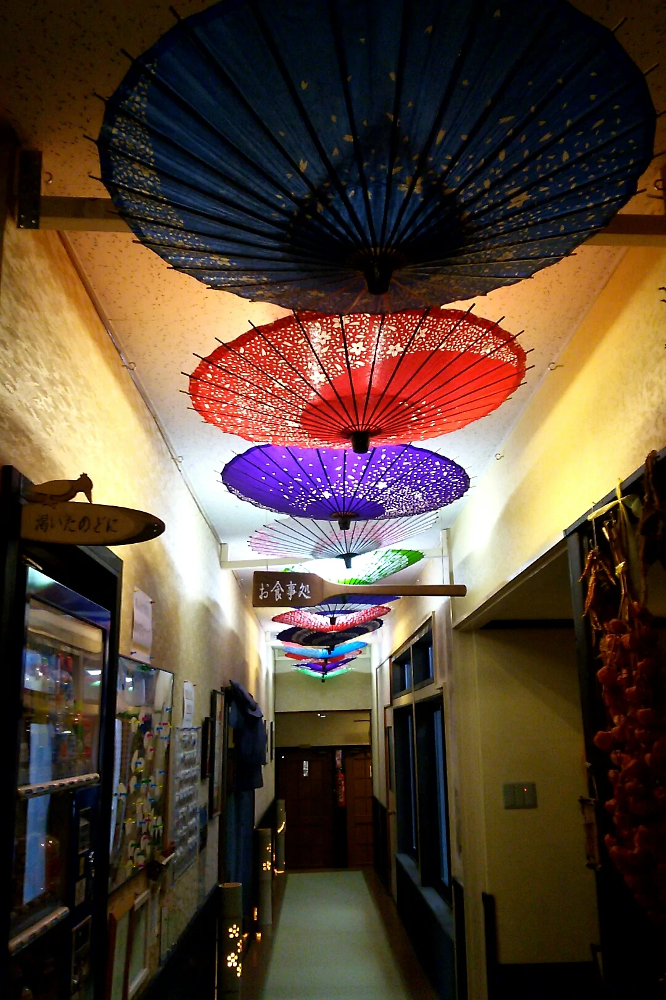
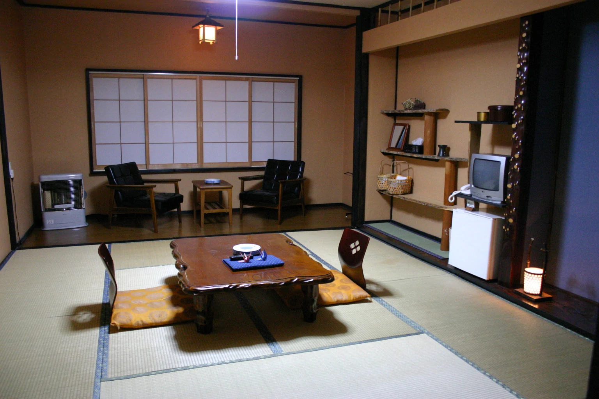
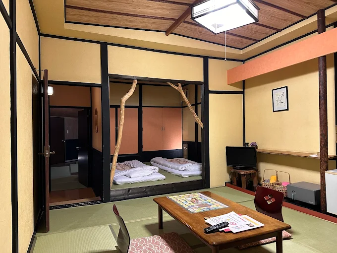
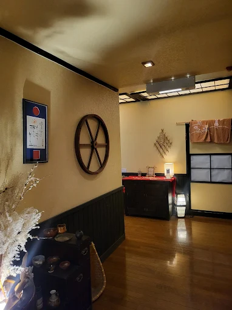

There is a specific kind of remoteness that Hokkaido produces and nowhere else in Japan does quite the same way: the remoteness of very large forests with very few roads, of onsen villages that exist because the spring came up through the ground in a place the mountains happened to make habitable, of a landscape that operates on its own schedule and does not particularly adjust itself for visitors. Nukabira Onsen, in the Tokachi region of central Hokkaido, is that kind of place. It sits on the edge of the Daisetsuzan National Park — Japan's largest — along Route 273 between Obihiro and Asahikawa, in white birch forest at a point where the mountains do not permit many alternatives to stopping and staying.
Sankosou — 山湖荘, "Mountain Lake Inn" — is a small ryokan in this village with eight guest rooms, a cave hot spring bath fed from its own private source, and an irori hearth in every room and in the dining area where dinner is served. It is, by design, a place that encourages the specific kind of inactivity that cold mountain air and firelight produce: sitting by the fire with nowhere particular to be, eating mountain food from the surrounding forest, soaking in water that has been flowing out of the earth below the building before the inn existed. Outside, a short drive south, the submerged railway tracks at Lake Shikaribetsu sink into transparent water with the quality of a world operating outside ordinary time. Anyone who has seen Spirited Away will recognize them without being told what they are.
The Inn: Eight Rooms, One Source, One Fire

Sankosou has eight rooms, all on the second floor, all non-smoking, and all equipped with an irori — the recessed hearth built into the floor that is one of the oldest forms of Japanese domestic heating and the one that most directly communicates the experience of being warm inside while something very cold is happening outside. The irori in each room is not decorative. It is functional: guests sit around it, warm their hands over it, and the specific quality of firelight it produces in the evening — softer and less even than electric light, with movement — changes the room's character in a way that no other feature could. The rooms themselves are tatami, without attached toilets or washbasins, which are shared facilities — a configuration that in another context might read as a deficiency but at Sankosou reads as the correct decision for a building of this scale and character.
The common areas are lit partly by the indirect illumination of bunches of colorful ban-gasa — traditional Japanese oil-paper umbrellas — which hang from the ceiling of the entrance corridor. It is an arresting detail in a building that is otherwise spare: the umbrellas scatter the light in patterns that move slightly as guests pass beneath them, and the effect is exactly the kind of quiet visual strangeness that a very small ryokan in a very remote place earns by not trying too hard to be anything other than itself. Children under elementary school age are not accommodated, which keeps the atmosphere quiet in the evenings.
The Spirited Away Landscape: Two Sites, One Region

Lake Shikaribetsu is Hokkaido's highest lake, at 810 meters elevation in Daisetsuzan National Park, approximately 50 minutes by car south of Nukabira Onsen. It was formed 30,000 years ago when a volcanic eruption dammed a river, and its water has exceptional clarity — on good days you can see the lakebed at considerable depth from the surface. The submerged tracks are the element that has drawn comparison to Spirited Away most directly: rails that emerge from the shore and descend straight into the water, continuing visible for some distance before the depth or the angle makes them disappear. Japanese travel writing has named Lake Shikaribetsu as resembling the world of Spirited Away explicitly, and the visual reference — railway infrastructure operating in a world where the boundary between water and land is not fixed, continuing into a lake bottom rather than a station — is the same image Miyazaki put in the film's sea train sequence.
The second site in this region is the Taushubetsu River Bridge over Lake Nukabira, approximately 20 minutes from Sankosou by car. This is a 130-meter concrete arch bridge with eleven spans, built in 1937 for the former Japan National Railways Shihoro Line. When the new hydroelectric dam raised Lake Nukabira's water level, the line was abandoned and the bridge was left to the lake's seasonal cycle: it sinks beneath the water each autumn as the reservoir fills, and rises again each winter as the dam draws it down. The bridge is never seen in the same state twice, and its condition worsens each year under the repeated stress of submersion and freezing. It has been called the "phantom bridge" for its seasonal disappearance — a structure that exists and is visible for part of the year and is simply gone for the rest of it, operating on a calendar that has nothing to do with anyone's schedule. The guided tour from the Higashi Taisetsu Nature Guide Center (from ¥4,500, advance reservation required) approaches the bridge on foot across the lake surface in winter, or through the forest road in summer. The roadside observation deck on Route 273 is free and requires no reservation, but the bridge is small at that distance.
The Cave Bath: Private Source, All Night
The cave bath is the most specific feature of Sankosou's onsen and the one that sets it apart from the other ryokans in the Nukabira Onsen village. The inn draws from its own private hot spring source — not a shared pipe from the village's communal supply, but a dedicated well beneath the building that produces sodium-calcium chloride bicarbonate spring water at 52 to 54 degrees Celsius, flowing at 24 liters per minute by natural pressure alone, without pumping. The bath operates on continuous flow-through: incoming spring water enters, used water exits, and no water is recirculated. In summer the temperature is adjusted with approximately 5% dilution to bring the bath to a usable 40 to 42 degrees; in other seasons it runs closer to source temperature.
The bath is available to guests from 15:00 to 09:00. From 20:00 to 05:00, it operates as a private exclusive bath: a wooden sign at the dressing room entrance reads "vacant" or "occupied," and guests flip it when they enter. This means the late evening and early morning hours — when the cave's stone interior is at its most atmospheric and the contrast between the hot water and the cold mountain air outside is most pronounced — are available for genuinely private soaking without scheduling or competition. The cave structure itself was described by one regional tourism source as becoming "a whimsical space when the sunlight enters in the morning," which is a compressed way of saying that light and water interact differently inside a stone chamber than they do in a tiled bath, and that the difference is worth experiencing at dawn.
The Irori Dinner: Mountain Food from the Forest Around You

Dinner at Sankosou is served at the irori in the dining room, and consists of ingredients from the Daisetsuzan and Tokachi regions prepared in the style that the hearth makes possible. The base plan — "Irori Sanzoku" (Mountain Bandit) — offers thirteen dishes from approximately ¥15,650 per person including two meals; the upgraded "Irori Mankyuu" plan adds four more courses for a total of seventeen, from ¥17,850. The content varies by season but follows a consistent logic: yamame trout skewered and grilled over the irori coals, Ezo deer stone-grilled at the table, rainbow trout served as sashimi, yamame tempura, mountain vegetables from the forests behind the building — gyoja-ninniku (wild garlic), kogomi (fiddlehead fern), udo (Japanese spikenard), warabi (bracken), taranome (angelica tree shoots) — and the inn's signature onsen tofu, a preparation in which cubes of tofu are simmered in spring water drawn from the same source as the cave bath. The hot spring's mineral content softens the tofu's surface while leaving the interior intact, and the liquid that remains after the tofu is eaten is used to cook onsen porridge.
Breakfast is Japanese-style: onsen tamago (eggs slow-cooked in hot spring water), Tokachi yam, temari yuba (rolled tofu skin), and rice cooked in a clay pot from Yumepiruka grain sourced directly from a farm in Pippu Town and cooked to order at the time of each guest's breakfast. The care taken with the rice — a specific variety, a specific source, cooked in the traditional method at the moment it is needed — is the kind of detail that a kitchen this size can afford to attend to and a larger operation would standardize away.
Hospitality Details: Yukata, Chopsticks, and What Children Cannot Do
Sankosou's hospitality page lists three things guests can choose: their yukata (the informal cotton robe provided for bath transit and in-room wear), their chopsticks (from a selection that includes different materials and grips), and their bath towel basket. These are small decisions, and the fact that they are offered as choices rather than standardized is a specific statement about scale — only a very small ryokan can individualize at this level of detail without the process becoming unwieldy. The inn's website is in Japanese, and reservations are made directly through the property's online booking system (linked from their site) or by telephone. There is no English-language booking interface. The contact email is ka-niya.06@outlook.jp; the phone number is 01564-4-2336.
The restriction on children under elementary school age is explicitly stated on the inn's website. This is consistent with the character of the place: Sankosou is not a facility designed for families with young children. It is a facility designed for adults who want quiet, a specific kind of food, a specific kind of bath, and a landscape outside that makes being inside by a fire feel like the correct decision. None of these things are incompatible with children in principle, but in practice a ryokan of eight rooms in which the dining atmosphere is centered on an irori hearth and the bath is a cave with an honor-system occupancy sign has made a considered judgment about who it is for.
Practical Information
- Check-in: From 15:00 Check-out: By 10:00 (bath available until 09:00)
- Meals: Dinners: Irori Sanzoku (13 dishes) from ¥15,650/person · Irori Mankyuu (17 dishes) from ¥17,850/person · Both include breakfast
- Spirited Away Sites: Lake Shikaribetsu submerged tracks (~50 min by car) · Taushubetsu Bridge phantom arc (~20 min by car)
- Booking: Direct only — via property website or telephone. No international booking platforms.
- Phone: 01564-4-2336 Email: ka-niya.06@outlook.jp
- By Car from Obihiro: ~1h 15min via Routes 241 + 273 · Free parking 15 vehicles
- By Bus from Obihiro Station: Tokachi Bus Nukabira Line → Nukabira Gensenkyo terminal (~1h 40min) · 2-min walk to inn
- Best Seasons: Winter (Jan–Mar) for snow, cave bath contrast, and Taushubetsu Bridge rising from ice · Autumn (Sep–Nov) for foliage and Shikaribetsu tracks · Spring/summer for mountain vegetables and lake activities
Getting There: The Long Road That Is Part of the Point
Nukabira Onsen is reached by two roads — from Obihiro in the south, via Route 241 to Kamishihoro then Route 273 north (approximately 1 hour 15 minutes by car), or from Asahikawa in the north, via the Hokkaido Expressway to Sounkyo IC then Route 273 south (approximately 2 hours 20 minutes). The bus operates from Obihiro Station on the Tokachi Bus Nukabira Line to Nukabira Gensenkyo terminal, from which Sankosou is a 2-minute walk; the journey takes approximately 1 hour 40 minutes. From Asahikawa, the intercity bus "North Liner Mikuni-go" to Obihiro stops at Nukabira Gensenkyo. There is free parking for up to 15 vehicles, including large and RV vehicles, behind the building.
The length of the journey from any major city is, for this kind of destination, not incidental. Nukabira Onsen exists where it does because the spring came up through the earth there, in a valley enclosed by mountains that are part of Japan's largest national park. The drive through birch forest on Route 273, past the blue-green river and the mountain profiles of Daisetsuzan, is the correct approach to a place that asks its guests to stop moving for a day or two and attend to what is immediately in front of them: the fire in the floor of the room, the food on the grill over the coals, the water coming through the cave wall.
| Full Name | 山の旅籠山湖荘 Sankosou (Mountain Lake Inn) |
| Address | Nukabira Gensenkyo 14-kita, Kamishihoro-cho, Kato-gun, Hokkaido 080-1403 |
| Phone | 01564-4-2336 |
| ka-niya.06@outlook.jp | |
| Anime Connection | Spirited Away — Lake Shikaribetsu's submerged railway tracks (sea train scene visual source) · Taushubetsu Bridge phantom arc (seasonal disappearing railway) |
| Rooms | 8 tatami rooms (2F) · Irori hearth in every room · Adults only |
| Hot Spring | Cave bath · Private source · Sodium-calcium chloride bicarbonate · 52–54°C · Continuous flow · Private mode 20:00–05:00 |
| Dinner | Irori hearth dining · Mountain game, river fish, wild vegetables, onsen tofu · 13 or 17 dishes |
| Booking | Direct only: www.sankosou.net — no international booking platforms available |
| Nearest Access | Nukabira Gensenkyo bus terminal — 2-min walk · Obihiro Station ~1h 40min by bus |
| Best Season | Winter for snow and bridge · Spring/summer for Shikaribetsu tracks and mountain vegetables · Autumn for foliage |
Photo Gallery

Photo 1
Photo 2
Photo 3'">
Photo 4'">
Photo 5'">
Photo 6'">Book Directly with Sankosou
Reservation is through the property's own website. No booking platforms. Direct contact is the only way in.
Visit Official Website →Visiting for the full Spirited Away pilgrimage? Read our complete guide: Through the Tunnel — Every Real-Life Spirited Away Location in Japan →
Lake Shikaribetsu is Hokkaido's most quietly cinematic location. See all our Hokkaido coverage in the archive.
← Back to Stay